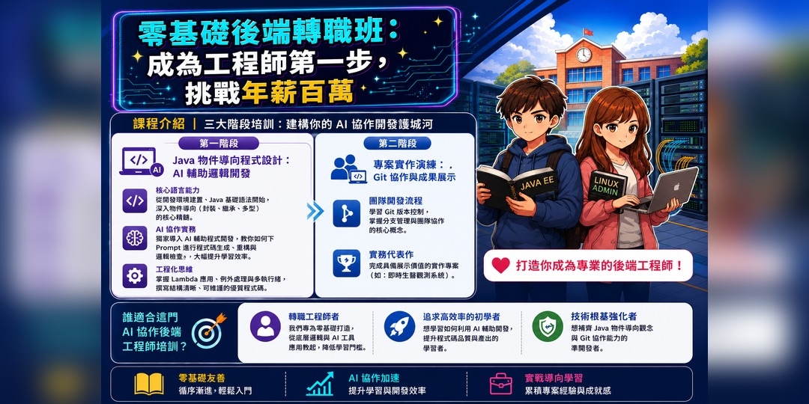
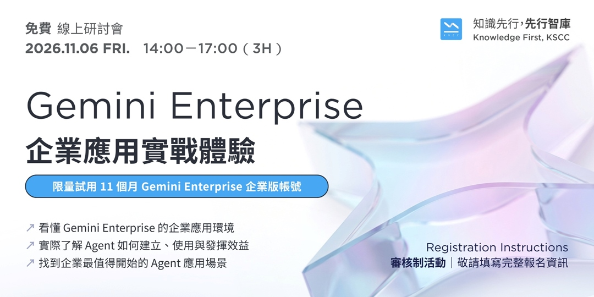
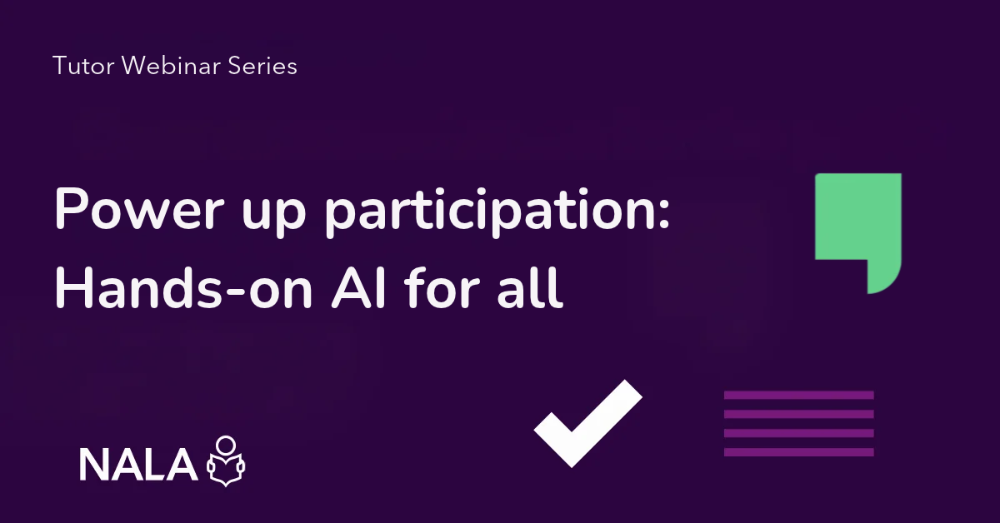
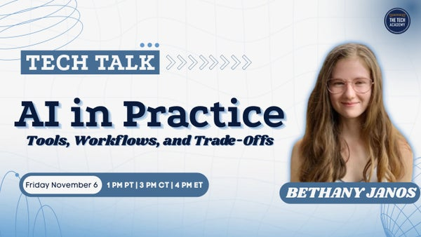

今日舉行 · 華語晚間
來源：ACCUPASS
AI工程師轉職班｜成為AI後端工程師的第一步
由「AI 都會寫 code」講到真正要學嘅設計、驗證同協作能力；介紹【AI大人學】零基礎後端轉職班方向。報名後由票券頁入場。
ACCUPASS 報名 →卷報 · 免費 AI 課程
二零二六 · 十一月六日 · 星期五
篩選準則：優先收錄今日舉行嘅線上免費 AI 研討會／工作坊；並補上今日仍可報名、隨時開讀嘅常設免費課。連結以官方為準。
今日焦點：華語晚間「AI 工程師轉職」說明會；下午有 Gemini Enterprise 企業體驗（已額滿，僅供參考）；另有愛爾蘭成人識字機構 AI 教學直播、360DT 現場砌 Agent、TAI Labs 由 Prompt 到功能，以及英語 Meetup／責任 AI。若水學院系列仍可報名。常設免費自學課見下方。
今日焦點 · 華語線上說明會
零基礎向：講清楚 AI 時代後端工程師要識咩——系統設計、資料庫、API、同 AI 共作驗證，而唔係只抄生成碼。適合想轉職軟體／後端、自學但缺共作經驗，或者先評估呢條路合唔合自己嘅朋友。
ACCUPASS 報名 →
由「AI 都會寫 code」講到真正要學嘅設計、驗證同協作能力；介紹【AI大人學】零基礎後端轉職班方向。報名後由票券頁入場。
ACCUPASS 報名 →
企業資料搜尋、專屬 AI Agent、部門工作流整合；限量 11 個月企業版試用（審核制）。本場已額滿，僅作紀錄／留意後續場次。
活動頁（已額滿）→
導師系列最終場：動手認識 AI，用創意方式支援學習同參與，兼談公平、安全使用。適合導師、成人教育同推廣學習嘅朋友。
NALA 活動頁 →
實務向短講：睇完工作流、問清楚真實限制，帶走可跟進嘅下一步。電郵報名即可，確認信附日曆同入場資料。
TAI Labs 報名 →由空檔開始 live build：tools、RAG／retrieval、evaluation；亦會談 Anthropic＋Microsoft 技能同職涯路徑。報名唔使信用卡。
360DT 報名 →
講 harness、MCP、plugins／skills、tokenmaxxing，同埋幾時值得用 AI、幾時要放手。適合學生同初階工程師。
Meetup 報名 →個人專案用 LLM 嘅最佳做法同常見踩坑；vibecoding 同產品管理導向方法點樣取捨。
Meetup 報名 →責任 AI 框架＋小組拆解真實洩漏案例，帶走評估工具安全性嘅 checklist。Online Learning Week 之一。
Concordia 報名 →
由零開始：用 AI 自動化資料整理、內容產出同日常流程。系列進行中，今日仍可報名跟進。
ACCUPASS 報名 →以下為長期開放、可即刻自學嘅免費線上課程／教材；唔係今日專場，但適合錯過直播後補學。
十二章實作：Transformers、Datasets、Tokenizer、微調同推理。官方寫明完全免費、無廣告。適合想親手煉 LLM／NLP 嘅工程師。
開讀 →由 Agent 基礎到 smolagents、LlamaIndex、LangGraph；含 agentic RAG 同結業專案。想跟當下「代理式 AI」潮流可由此入門。
開讀 →經典免費深度學習課：電腦視覺、NLP、表格數據、部署；用 PyTorch／fastai。需一定 coding 經驗（建議 Python），可用免費雲端 GPU。
開讀 →開源課綱：提示工程到 RAG 同 Agents；Python／TypeScript 範例。可讀教材即學；跑程式可用 Azure／Foundry Local 等（部分 API 或需費用）。
開讀 →非技術向：生成式 AI 能做／不能做咩、提示工程同業務影響。影片免費；實驗室／證書或需 PRO。適合想建立共同語言嘅產品同管理層。
開讀 →Google 經典 ML 速成：概念、TensorFlow 練習同真實案例。搭配 Introduction to Generative AI 等「No charge」路徑，適合由 ML 基礎補起。
開讀 →官方學習中心：Claude 使用、AI Fluency、Claude Code、API／MCP 等。適合想系統學習用 Claude 同相關工具嘅人。
開讀 →